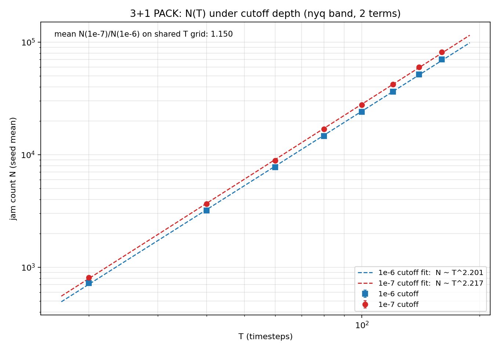
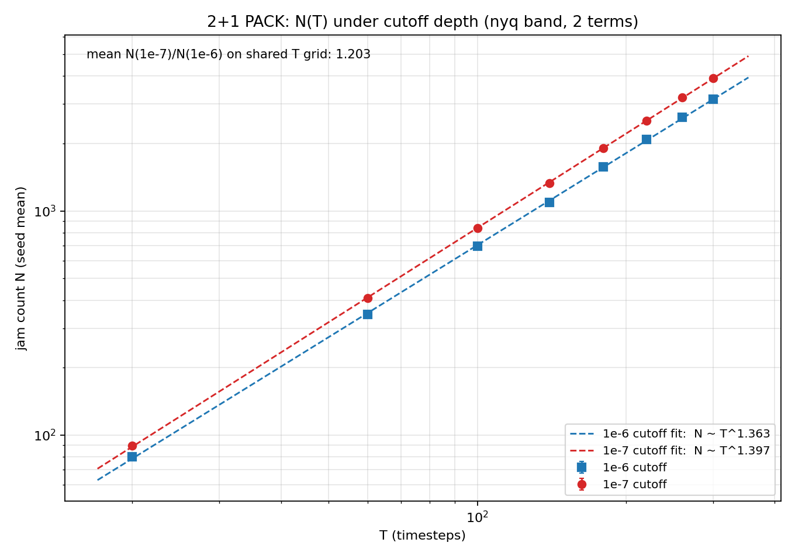
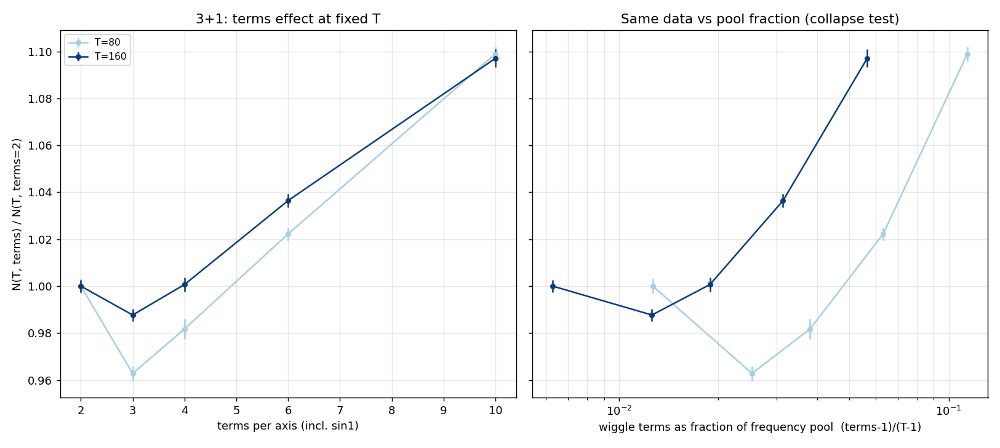
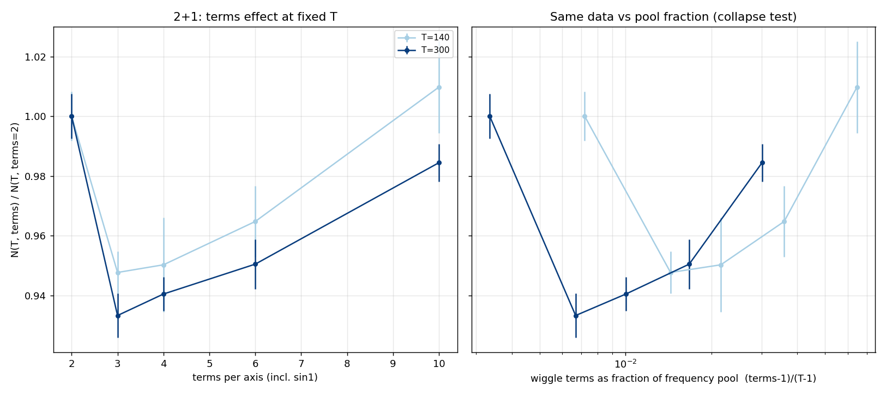

Decay ladders: how far from jammed is “jammed”, and which exponents survive depth
freqdecay{3,2}d_e{6,7,8} campaigns (torus+phase, terms
∈ {2,10}, 3 seeds; 3+1 at T = 80/160, 2+1 at T = 120/320;
cutoffs 1e-6/1e-7/1e-8; smart sampler) · campaign code
69be0d9
· chart
dc300ff
The multi-depth companion to yesterday's sweeps, and the first
cutoff ladder run on an engine that honors its stop criterion exactly
(the pre-07-06 accounting bias made older ladders effectively
~2× shallow). Three findings:
Two-point exponent (between the arm's T pair) vs cutoff depth.
3+1: depth-stable. 2+1: strongly cutoff-limited.
No jamming plateau in sight. N grows a steady
10–16% per cutoff decade in every cell, with no curvature
over the three decades — at 1e-8 the packings are still
growing as a slow power law of attempts. Every absolute N in the
project is a cutoff-conditional number; only exponents and ratios
are portable.
3+1 exponents are depth-robust: terms = 2 moves
2.297 → 2.314 and terms = 10 moves 2.386 → 2.410 across
two decades (≤ 0.02/decade, consistent with the old cutoff
study). The terms gap persists at every depth — so within
the smart ensemble the terms trend is a genuine sampler effect,
not a convergence artifact (the uniform test, not depth, is what
killed it).
2+1 exponents are strongly cutoff-limited:
+0.05/decade (terms = 2: 1.373 → 1.470 from 1e-6 to 1e-8),
and the terms gap closes and inverts by 1e-8. The historical
1.38 headline is a shallow-window value; 2+1 exponents must
always be quoted with their cutoff, and any future 2+1 headline
should come from a depth extrapolation, not a single cutoff.
Takeaway: the 3+1 exponent story (now re-anchored at the uniform
D ≈ 2.23) rests on solid depth footing; the 2+1 story needs a
deeper or extrapolated measurement before its uniform re-anchor is
quoted. Chain bookkeeping: all nine campaigns (two sweeps, one
uniform control, six decay arms) completed overnight on the
five-worker fleet — mother, kitt, deep-thought, and a rented
dual-4090 box that took every T = 160 e-8 job.
PACK: the packing number N(T) is invariant where it matters
pack{3,2}d_e{6,7} + packterms{3,2}d_e6
campaigns (torus+phase, uniform sampler, 5 seeds, subpaths off;
3+1 T = 20–160, 2+1 T = 20–300; term sweep at
3+1 T ∈ {80,160}, 2+1 T ∈ {140,300}) · campaign code
807398d
· chart
6964f0f
· orchestrator fix
d75e586
First full campaign under the post-cleanup engines (phase schema
always on, maxfreq = T hard-coded, uniform-only sampler): is the jam
count N(T) a robust object, or does it move with the model knobs?
Six stores, 260 runs, on deep-thought + the rented dual-4090 box
(3+1) and mother + kitt (2+1).

3+1: N(T) at 1e-6 vs 1e-7. The exponent barely moves
(2.201 → 2.217); the decade of extra depth is a pure
prefactor lift (×1.150).

2+1: same layout. Exponent 1.363 → 1.397 (+0.034/decade,
the known 2+1 cutoff drift), prefactor ×1.203.
Cutoff moves the prefactor, not the law. A
decade of depth lifts every N by ~15% (3+1) / ~20% (2+1) —
the “no plateau” growth from the decay ladders —
while the fitted exponent shifts ≤ 0.02 (3+1) / 0.034 (2+1).
The full-ladder fits (2.20 / 1.36 at 1e-6) sit below yesterday's
high-T two-point values because the local slope steepens with T:
on this same data, T = 80 → 160 gives 2.265 (e6) / 2.280
(e7), and 2+1's T = 140 → 300 gives 1.393 / 1.415, matching
the decay arms. Exponents are portable; quote them with their
window.
The dictionary barely matters. Under the uniform
engine, going from 2 to 10 terms per axis moves N by at most
+10% (3+1, terms = 10) and stays within ±5% in 2+1, with a
small terms = 3 dip in both. Compare the old smart-sampler story
where terms shifted the exponent itself — one more
confirmation that trend was sampler-made. The pool-fraction
replot does not collapse the per-T curves, so what little effect
remains tracks the raw term count, not the (terms−1)/(T−1)
pool fraction.

3+1 term sweep: N moves ≤ 10% across a 5× dictionary
change; no pool-fraction collapse.

2+1 term sweep: flat within ±5%.
Takeaway: N(T) is a real, knob-robust observable — its exponent
survives cutoff depth and dictionary size; only the (cutoff-conditional)
prefactor moves. Bookkeeping: the packterms3d_e6 leg was
killed mid-run by an scp of a T = 160, terms = 10 dump timing out
(the exception escaped the poll loop); fixed in
d75e586
(a timed-out fetch now retries on a later poll) and the leg resumed
from its store without losing a job.